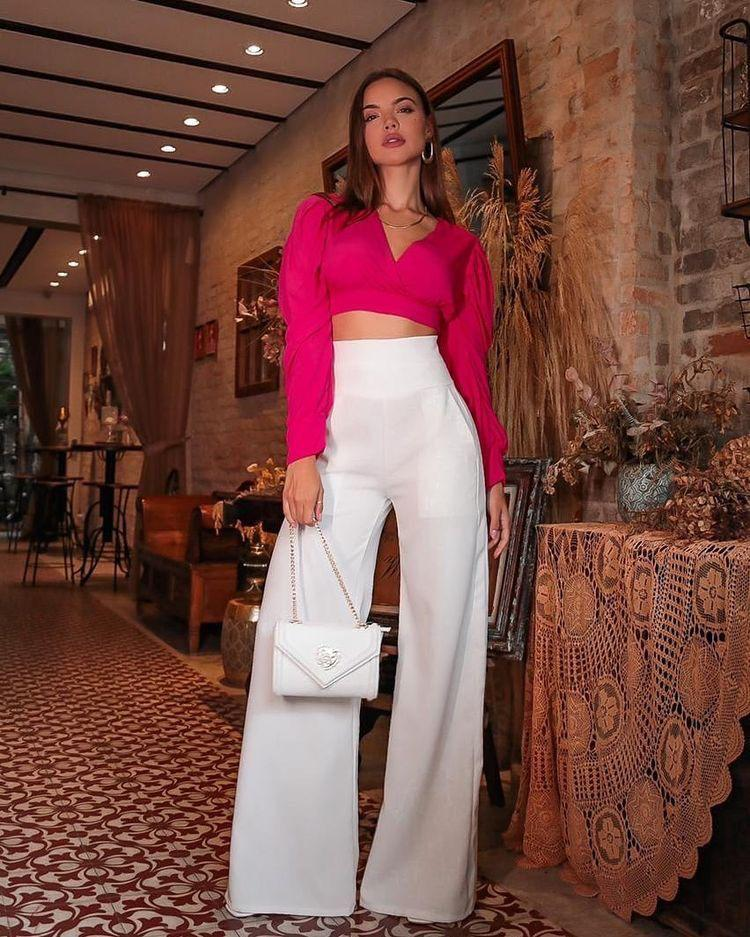

Comencé asesorando a mis hermanas, a mis amigas, desde lo más genuino, casi como un juego… acompañarlas a comprar ropa, maquillarlas, armarles looks; el tiempo libre se me pasaba en un hobbie que con el tiempo entendí, era mi pasión. Sin teorías previas, percibía el poder que tiene la imagen: el dominio que tiene sobre nosotros mismos, como habla sin palabras sobre nuestra personalidad, y su influjo a la hora de comunicarnos con los demás. Estudié, me recibí como asesora de imagen tanto de mujeres como de hombres, y deconstruí toda teoría aprendida para llevarla a la práctica y al ejercicio real. Llevé adelante workshops grupales, algunos entre desconocidos, y otros entre amigos y familiares; asesoré a personas con un objetivo puntual, y asesoré a personas en su imagen integral; trabajé desde lo presencial y lo online; armé looks para eventos puntuales, analicé guardarropas y acompañe en rutas de compras inteligentes.
Me vinculo con el otro desde la empatía, dejando de lado las críticas negativas e ideales hegemónicos, y guiándolos en un camino de ANÁLISIS INTERNO para trabajar la IMAGEN EXTERNA. Cómo nos vestimos, cómo nos miramos, será la consecuencia de un trabajo interno, de auto-reconocimiento y entendimiento del cuerpo. Todo servicio en asesoramiento de imagen elevará el autoestima y seguridad, logrando así, una COMUNICACIÓN EFECTIVA de la imagen personal. Se emprende un camino de búsqueda hacia una IDENTIDAD VISUAL, que tiene como objetivo DISFRUTAR de la propia imagen. Te propongo momentos de aprendizaje, de introspección y de diversión, para entender e internalizar la construcción de tu imagen como medio de goce, placer y comunicación.